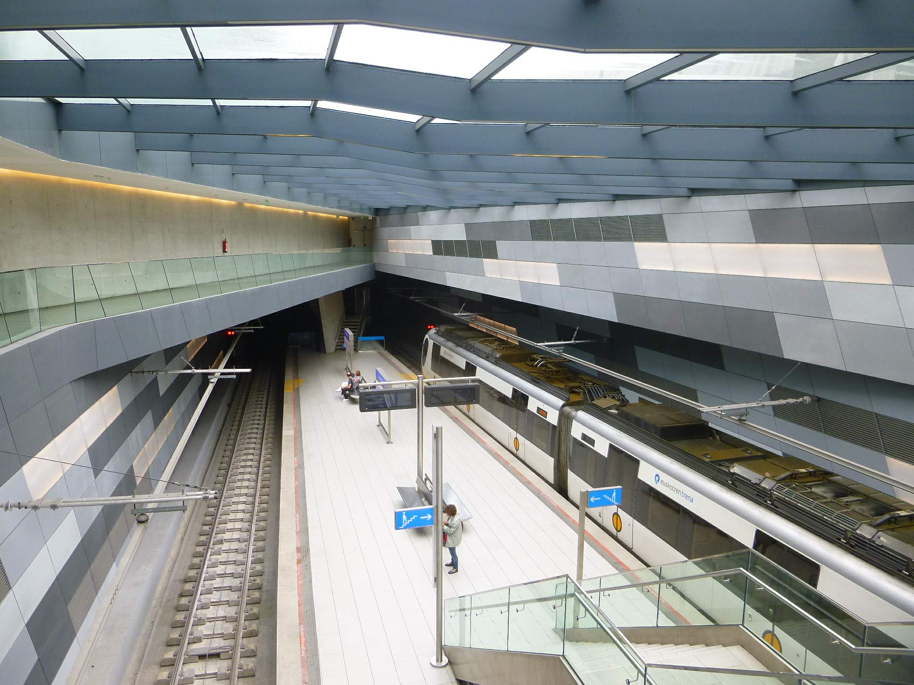
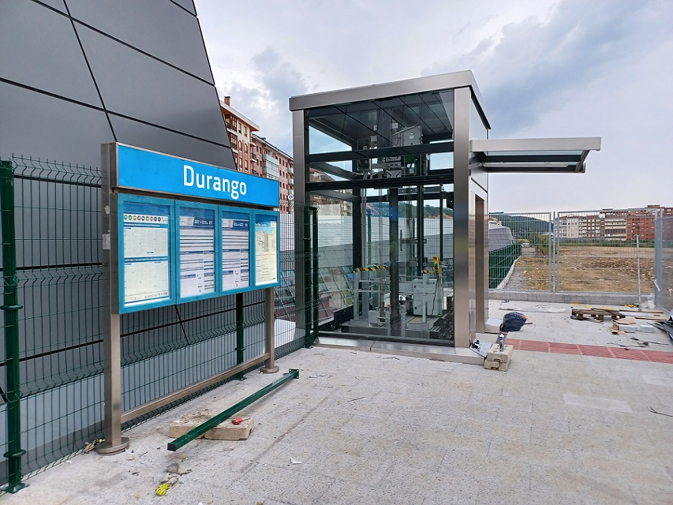

Horario
Historia
El origen de la ciudad de Durango se remonta al 8 de julio de 1563, cuando el explorador español Francisco de Ibarra decidió fundarla en el valle de Guadiana debido a su cercanía con el cerro del Mercado, lugar en el que se creía había plata, a dia de hoy es de las unicas opciones que hay para acceder a lugares lejanos, por eso la propuesta de un metro que nos permita acceder a diferentes localidades de durangaldea y sus alrededores.
Nuestro metro de durango sera la alternativa a otras opciones que no permitan la misma libertad por durangaldea se fundo en el año 1844
